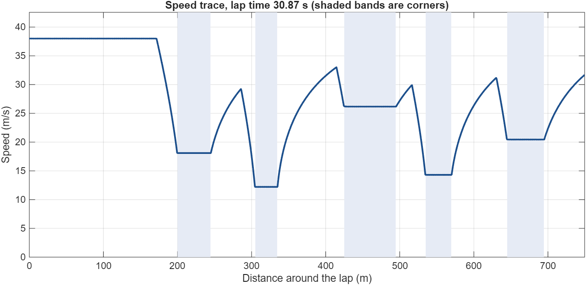
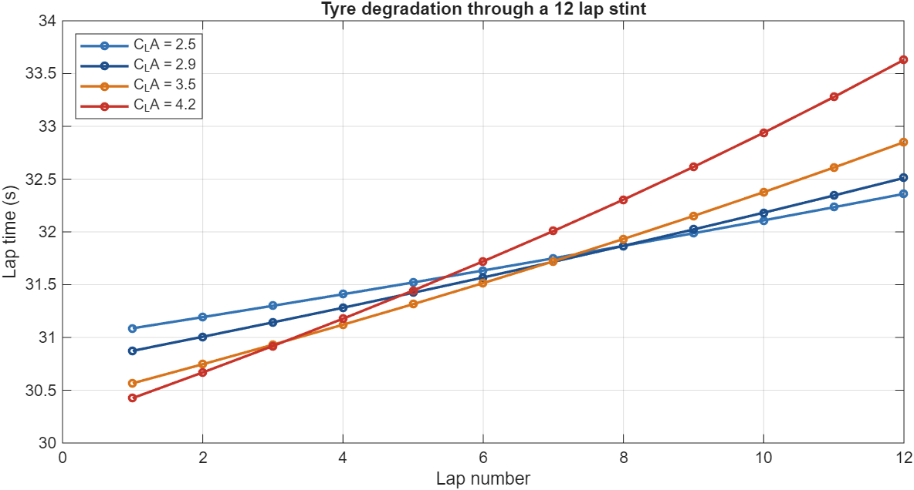
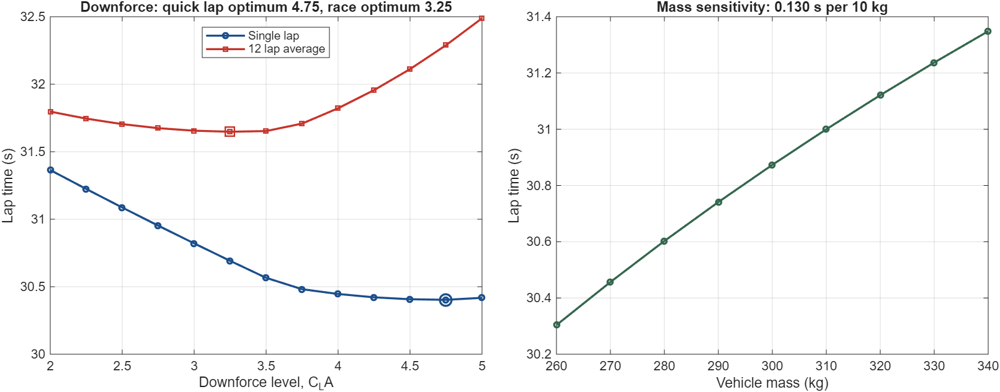

Formula Student: Race Engineering
Three seasons with Southampton University Formula Student in the race engineering and chassis groups, developing the simulation and data analysis used to inform setup decisions.
The role of race engineering
A student team operates with limited track time, limited tyres and a limited budget, and every physical test consumes all three. The function of the race engineering group is to ensure that when the car runs, it runs the setup most likely to be quick, and that the reasoning behind that setup can be explained rather than assumed.
In practice this reduces to two questions asked continually: what effect does changing a given setup parameter have on lap time, and how much confidence can be placed in the data indicating that effect.
Simulation
I developed lap-time and tyre load and degradation models in MATLAB and Excel to address the first question. The purpose of these tools was not to produce a single predicted lap time, but to rank changes: to identify which setup parameters affected lap time sufficiently to justify spending track time on them, and which did not.
Running sensitivity studies across those parameters meant the team arrived at a test session with a shortlist that had already been filtered analytically, rather than using running to establish that a change was insignificant. Wasted test cycles are among the most expensive things a student team can do.
Data analysis and correlation
I used MoTeC i2 to analyse race and qualifying laps, comparing logged channel data against the simulation output and against the driver's assessment of the car. These three sources disagree more often than might be expected, and the disagreements are generally where the useful information lies. A model that matches the logged data while contradicting the driver is usually missing a physical effect.
This cycle of prediction, measurement and reconciliation was the most valuable aspect of the role, and is the closest equivalent in student motorsport to the work of a professional performance or strategy group.
Chassis
Alongside the race engineering work I researched the integration of front roll hoops into the chassis for future vehicles, and presented the technical and feasibility findings to the department and to team management. Presenting to those responsible for acting on a design recommendation requires a different set of skills from carrying out the analysis.
Results
During my time with the team, SUFST finished 2nd in the FSUK Simulator Championship and lap time challenge in 2025, and 10th overall at FSUK 2025. The simulator result is the outcome most directly connected to the setup and simulation work.
A representative lap time model
As the team's model is not mine to publish, I wrote an equivalent model from scratch for this site: a quasi-steady lap time simulation with tyre degradation, using a synthetic track and generic vehicle parameters. It demonstrates the method I used within the team, and the figures below are its actual output.
Method
The solver makes three passes over a discretised lap. It first establishes the cornering limit at every point. That limit must be solved rather than assumed, because available grip depends on downforce, downforce depends on speed, and speed is the quantity being determined:
def corner_limit_speed(car, radius, mu):
"""Speed at which the car is exactly on the lateral grip limit."""
k = mu * 0.5 * car.rho * car.cl_a / car.mass # aero grip term
bracket = 1.0 / radius - k
v2 = np.where(bracket > 0, mu * 9.81 / bracket, np.inf)
return np.minimum(np.sqrt(v2), car.v_max)Where that bracket falls to zero or below, the car is no longer grip limited through the corner, as downforce is being generated faster than the corner requires it, and the limiting factor becomes power or gearing. A forward pass then applies acceleration and a backward pass applies braking, with both sharing tyre capacity with cornering through a friction ellipse. Lap time is the integral of ds/v.

Tyre degradation
Available grip falls as the tyres do work, so the model reduces peak friction through a stint, at a rate that increases when the car loads the tyres more heavily.

Setup sensitivity
Running the model across a range of downforce levels demonstrates the principal trade-off. Downforce increases cornering speed but also increases drag, and the drag penalty grows with the square of the downforce generated, as the majority of it is induced. Downforce additionally increases the work done by the tyres, which raises the degradation rate across a stint.

This divergence is the reason a model of this type is worth developing. A figure such as 0.131 seconds per 10 kg converts a general preference for a lighter car into a quantified target, and the separation between the single-lap and race optima is a decision that cannot reliably be made by feel.
Download the simulation code (MATLAB)
Around 230 lines of documented MATLAB, using only base MATLAB with no toolboxes. Running lap_time_simulation reproduces all three figures above exactly as shown. If you would rather change the numbers than read them, the Formula 1 model runs the same class of solver interactively in the browser.
Relevant skills
- Developing simulation tools intended to support a specific decision.
- Working with logged vehicle data and reconciling it against both models and driver feedback.
- Operating within a multidisciplinary team to fixed competition deadlines.
- Presenting technical findings to those responsible for acting on them.